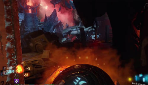

The first Corruption Engine is located a short walk from spawn, just in front of the temple.
This is a circular area, surrounded on all sides by jagged rocks and with a ritual table in the middle.
There are four pillars and one large machine on top of the temple entrance.
Upon activating the Corruption Engine (500 points), the smaller ones are struck by lightning and a mini zombie horde comes crashing in.
Hold them off for about 30 seconds and the temple entrance opens, allowing players to pass through the portal to a new area.
You will find more Corruption Engines in other areas of the map.
Repeat the process above on all FOUR of the corruption Engines (generators) until four green lights appear on the map diagram.
Step 2 - Collect the Summoning Altar Pieces
Travelling through the portal takes you to one of the classic zombies maps.
Within each of the classic maps there are "Summoning Altar" pieces to find.
In total there are three pieces to collect so take the portal to each of the areas below and find the items that are hidden within:
Part 1 (Skull):
Location #1 - downstairs in Verruckt, on the bookshelf besides Speed Cola.
Location #2 - upstairs on the wheelchair, by the stairs leading out to the Corruption Engine.
Location #3 - upstairs on the wheelchair, just before the jump pad.
Part 2(Purple Gem):
Location #1 - downstairs in Shangri-La (temple area). Search the wall nearby the primis statues.
Location #2 - next to the pyramid in Der Eisendrache.
Location #3 - on a table, in the small outside room just before the jump pad in Kino.
Part 3(Wheel/Flag):
Location #1 - Mob of the Dead, Cafeteria room on the wall.
Location #2 - Near the Summoning Altar in Origins, opposite from the generator on the edge mound.
Location #3 - Origins, top of the excavation site, in the little hub on your left.
Step 3 - Build the Summoning Altar
There are several Summoning Altars spread around the map.
They appear as circular stone "plates".
Once you have all of the altar parts in your possession, you can interact with an altar to complete the build.
When the altar is built at one location, the player can summon a special keeper called the "Keeper Protector" for 5000 points at any of the altar locations.
This keeper follows the player around, offering protection and automatically reviving.
Summoning Altar locations are shown below:
Location 1 - Verruckt upstairs.
Location 2 - Shangri-La, lower level downstairs, inside the temple room with the large primis statues.
Location 3 - Origins, opposite the generator(where Speed Cola used to be).
Location 4 - Kino, on the stage behind teleporter.
Step 4 - Enter the Apothicon
Make your way to Nacht der Untoten, go upstairs and look for the computer control panel with the four green panels.
Wait for the giant Apothicon to move in front of the electric trap and then activate the control panel.
Fingers crossed the electric hits the Apothicon beast, knocking him down and revealing an entrance to his mouth.
Walk through the Apothicons mouth to go inside his belly.
Venture through the belly of the beast until you see the giant yellow orb.
Shoot it to reveal the Pack-a-Punch machine.
Take the opportunity to improve your primary weapon.
It's worth becoming familiar with this location because you'll visit the Apothicon on many occasions to unlock the hats and to complete the Egg step later on.
Step 5 - Acquire and Upgrade the Apothicon Servant
The original Wonder Weapon from Shadows of Evil was supposed to be upgradable but no one could find the steps to do so.
Many tried, some cheated and others stood by Blundell's words that we would eventually be able to upgrade the tentacle weapon.
Now comes the time for us to put this deadly weapon to good use.
Once you have the Wonder Weapon from the mystery box look for the (small) blue orbs floating in the sky which must be hit using the Apothicon Servant.
Successfully hitting the Orb sucks it in and moves it to the Pack-a-Punch machine.
There are several orb locations which are shown below and included in the video above:
Verruckt - upstairs, go to the very end near to the jump pad. Face away from pad and look up.
Nacht der Untoten - from the upper floor, outside to the left of the wall weapon.
Mob of the Dead - very hard to spot, above the Corruption Engine, look straight up towards the massive orb.
Shangri-La - above the temple.
Verruckt - orb is reachable from the Corruption Engine, face the temple and look to the right.
Now that you have collected all five of the blue orbs, the Pack-a-Punch machine has changed slightly in appearance - notice the blue stones inside?
Walk up and insert the Apothicon Servant for the official upgraded version in return.
Step 6 - Shoot the Gravestones
In the spawn area there is a small graveyard to the left, with four gravestones which are outside of the boundary of the map.
Two stones are viewable from the small enclosure to the right of Quick Revive.
The other two gravestones are viewable from the left hand side of the jump pad that leads to Origins.
If the Graves were numbered 1-4, going from left to right, then the order to shoot them is 2-3-1-4.
This should spell out the names: Richtofen, Dempsey, Takeo, Nikolai.
The same order as the souls were collected into the summoning key.
The graves will turn a bright red colour and an audio cue will sound.
Note: This step can be done straight from round 1.
Step 7 - Film/Audio Reels
There are 3 collectible film/audio reels hidden in the map that you need to acquire and play.
Reel #1:
Upon releasing the Keeper Protector for 5000 points take him to the jump pad where the little rock has spawned.
Be warned this can be hard to spot.
Wait for the keeper to catch up with you and stand near the pad.
If necessary jump back and forth between the pads until at some point the Keeper starts to perform a ritual, raising his hands in the air and leaving the map to collect a secret item.
At this point zombies will be attracted to him.
Make sure you protect the keeper for about 2 mins until he disappears and drops an audio reel on the floor.
The first reel can be played back using the audio player on the upper floor of Nacht.
Insert the reel to listen to an audio quote.
Reel #2:
First, get Li'l Arnies from the mystery box.
Go inside the Apothicon and take note of the nine holes where zombies spawn in around the edges.
These holes are like little archways and green puffs of smoke will appear on a regular basis.
Throw each of the arnies into separate holes.
It is worth going "prone" to do this step.
After you throw all three arnies, kill the three margwas that spawn.
Repeat two more times so that you have thrown a total of nine Li'l Arnies into the holes.
Max Ammo's are highly useful for this step if playing SOLO.
The reel will then spawn onto the middle bridge directly above the acid pool.
This reel can be played in Kino.
Step 8 - Collect the Body Parts (Skull, Leg, Hand)
In each of the locations below shoot the rocks/stones to release the body part and then "suck" up the body part using the upgraded Apothicon Servant:
#1 - Shangri-La, stand in front of the Stamin-Up machine. Look up slightly and shoot the cracked stone to free the skull which then floats in the air.
#2 - Origins, look outside the map to the right of the Keeper Protector panel. Look inside the fire where the giants footprint is.
#3 - Verruckt, look outside the map, to the left of the Corruption Engine where the fountain/waterfall is.
#4 - Spawn, to the left of the Corruption Engine facing the church. Look towards the broken pieces of church wall, slightly middle right in the pack of floating rocks.
#5 - Nacht, upper floor. Face wall gun, turn left and look towards the red beam in the sky. Shoot the underside of the stone ceiling in distance.
#6 - Der Eisendrache, on one of the walls that you wall-run on to get the free perk bottle. Specifically, the bone is located in the bottom right hand corner of the third wall that you jump onto. You might need to repeat this twice, once for shooting the bone with the PaP weapon and then again to suck the bones with the Apothicon Servant.
Step 9 - Acquire the 3rd Reel and Meet Sophia
Now that you have found all of the body parts, they have transported to the upper floor of Nacht, just beside the Jug machine.
Head over there and use the upgraded Apothicon Servant to shoot the bones.
They'll disappear, revealing the body of Sophia.
Shoot another time with the AS and the third audio reel is there ready to pick up.
Head to Origins to play this audio then return to Nacht and Sophia will be present in her Gorod Krovi robot form, albeit semi-transparent.
Step 10 - Use Turrets to Reflect Beams
Go to each of the Corruption Engine turrets and reflect the beam onto one of the floating rocks/crystals in the sky.
These rocks are shaped like diamond/oblongs and are slightly lighter in colour than the other rocks.
If done correctly, you will clearly see the beam reflect off and go in the direction of Sophia.
You will also be kicked off the turret immediately to signify that the beam has been aligned correctly.
After all of the beams have been reflected correctly, Sophia will change into her solid form.
Step 11 - Use the Teleporter to Samantha's House
Head back to Nacht and watch as Sophia floats off to the theatre.
Go to Kino, let her recharge the teleporter and take the telepoter to the house.
Once inside the small bedroom, look on the bed for the Kronium book and pick it up.
Back at Kino, place the book on the lectern on the stage.
Step 12 - Find the Apothicon Eggs
The third inventory item in the HUD appears to be a brain, but in fact it's actually an Egg which eventually becomes a Gateworm.
You can pick up an egg from the following possible locations:
Der Eisendrache, Primis statues room.
Der Eisendrache, near Wunderfizz on the way to Kino.
Origins, underneath the dig site, opposite the KN-44 wall gun.
Origins, to the left of the Wunderfizz.
Shangri-la, bottom of the stairs near fire.
Shangri-la, near Stamin-Up on a broken pillar.
Verruckt, upstairs above speed cola, in corner.
Verruckt, near jump pad to Mob of the Dead.
Verruckt, between the test tubes from Zetsubou no Shima.
Kino, opposite the stage near the bowie knife.
Kino, down the right side of the seating area leading away from Der Eisendrache.
Spawn, near jump pad leading to Shangri-La.
Spawn, near jump pad leading to Origins.
Mob of the Dead, facing away from Corruption Engine, near the cell blocks.
Note, these are not all of the possible locations and the eggs move slightly each game.
However, they are very easy to find thanks to their distinctive yellow colour.
Step 13 - Charge the Eggs and Hatch the Gateworms
Once you have an Egg it needs to be charged before you can move on to the Rune step below and trade your worm for a Rune.
Take the egg inside the Apothicon Servant and place it in one of the four pods that surround the acid pool.
Now kill 15+ enemies inside the acid pool to charge the egg and hatch a gateworm.
Once ready, pick up the worm and it goes in your inventory.
Step 14 - Acquire the Runes of Creation
The four empty slots on the right side of the HUD inventory are for the secret "Runes of Creation".
These four runes relate to each of the elements - fire, ice, wind, electric.
The key to claiming a rune is actually quite simple now that you have a hatched gateworm.
Go to each of the main locations (Spawn, Origins, Verruckt etc) and walk slowly around until you hear a sonar beep.
The beeping intensifies the closer you are to a rune.
When at maximum intensity press square to dig up the rune from the ground.
Repeat steps 12, 13, 14 for each of the eggs until you have all four Runes of Creation.
Step 15 - Final Boss Room (Simon Says)
Now that you have four Runes, head straight to the upper floor projector room in Kino.
Stand on the large purple symbol and you'll be teleported into the BOSS room.
Now play a game of Simon says.
Go to the opposite side of the boss room and interact with the book on the stand.
The book will open and flick through several pages one at a time.
Remember the order of the symbols because you need to press these in the right order.
Go to the opposite side of the room again and wait for the symbols to appear one by one.
When the correct symbol (in your sequence) appears, interact with it.
Wait again for the next correct symbol to appear and interact again.
Repeat this until you have interacted with all four of the symbols in the sequence shown by the book.
If you fail, you will have to wait until the next round to return and retry.
Four phases will now commence: fire, shadow, crazy place and anti-gravity.
In each phase the key is to kill off the Margwa's as soon as possible.
Phase 1 (Fire) - during the fire phase the floor sets alight and lava appears. Stay away from the fire.
Phase 2 (Purple/Shadow) - during this phase lightning rains down from above. Stay on the move, preferably on the upper levels of the boss room..
Phase 3 (Blue/Crazy Place) - walls will appear like in the crazy place, try and avoid getting trapped.
Phase 4 (Antigravity) - stay inside the spotlights to avoid getting hurt.
These phases can be in any order.
Successfully completing the four phases will reward you with the Summoning Key which drops down from the sky.
Step 16 - Use the Summoning key

Correctly pressing all the symbols rewards you with the Summoning Key.
Now throw the key at the following locations:
#1 - Mob of the Dead - stand on the foot bridge facing away from the Corruption Engine. Note the body handing from the ceiling. Throw the key at the poster in the cell slightly to the left in the distance. A music box should spin around with Samantha inside.
#2 - Origins - throw key at the grave stone which is located at the top of the dig site, far corner behind the tunnel leading down to Mob of the Dead. You need to jump to see this one clearly, it's on top of a wooden platform.
#3 - Shangri-la - throw at the focusing stone (pole with blue ball on the end) which is at the top of the stairs to the left.
#4 - Verruckt - throw at the water fountain to the left of the Corruption Engine.
#5 - Der Eisendrache - throw at clock, above and opposite Corruption engine.
#6 - Nacht - throw at the red barrel which is outside the window between Spawn and Der Eisendrache entrances.
#7 - Kino - throw at the huge chandelier.
Once complete head back to the Kino teleporter and back to the boss room once again, this time for the real fight.
Step 17 - Shadow Man Boss Fight
Place the summoning key at one of the green lights and collect souls in the vicinity by killing zombies etc.
Once the key is charged enough, pick it up and throw it to Sophia (in the middle of the room) so she can shoot the Shadow Man with a lazer.
Provide help by shooting the Shadow Man yourself as well.
Repeat this process enough times until the Shadow Man is inside the Apothicons mouth.
At this point interact with the book and the fight is complete.
CONGRATULATIONS - You have finished the Easter Egg for Revelations! The final cutscene now plays..